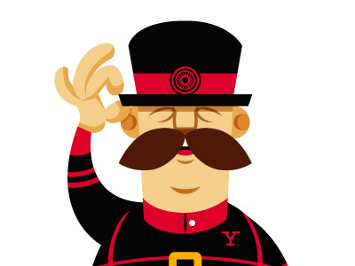
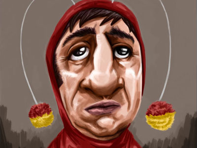
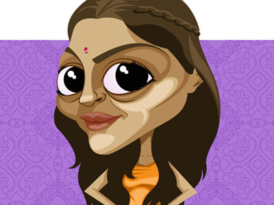
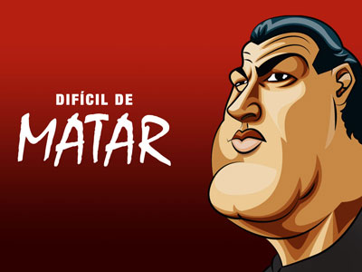
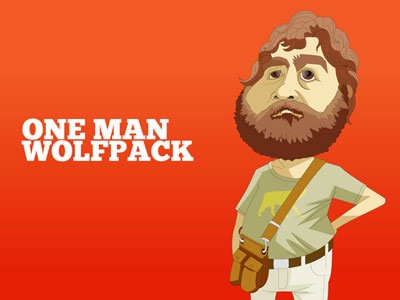

Trabalho Recente
-

Yeoman
Personagem. -
 Hubee
Hubee
Identidade visual + mascote. -
 Petz
Petz
Identidade visual + site em html5 e css3.


UX, UI Design e Front-end
-
 TeleListas.net
TeleListas.net
Aplicativo para smartphones. -
 Pingo de Leite
Pingo de Leite
Site em html5 e css3. -
 MJ Campos
MJ Campos
Identidade + site em html5 e css3. -
 Sociedade Espírita Ramatis
Sociedade Espírita Ramatis
Site em html5. -
 Beiju
Beiju
Site (desativado) -
 Boteco Vip
Boteco Vip
Site (desativado) -
 Curso Clio
Curso Clio
Site em html5. -
 Stage3
Stage3
Identidade visual, personagens e site em html5. -
 Stella Anttunes
Stella Anttunes
Site em xhtml.


Ilustração e Identidade Visual
-
 Caricatura de Amigos
Caricatura de Amigos
Caricaturas feitas ao longo de 1 ano e meio de TeleListas.net. -
 TeleListas.net e Ophertas
TeleListas.net e Ophertas
Personagens utilizados nas peças de comunicação da empresa. -
 TeleListas.net
TeleListas.net
Ilustração utilizada em camisetas, mousepads e wallpapers. -
 Petz
Petz
Identidade visual e ilustrações. -

Chapolin
Caricatura e experimentação em pintura digital. -
 Seu Madruga
Seu Madruga
Estudo de técnicas e linguagens diferentes. -
 Ataque das Corujas
Ataque das Corujas
Identidade visual para site sobre games. -
 The Beatles
The Beatles
Ilustração vetorial sobre foto. -
 ET
ET
Ilustração feita com formas básicas no Illustrator. -

Maya
Personagem de Juliana Paes na novela Caminho das Índias. -
 Raj
Raj
Personagem de Rodrigo Lombardi na novela Caminho das Índias. -
 Los Hermanos
Los Hermanos
Caricatura dos barbudos. -
 Pattern
Pattern
Padrão de fundo do meu perfil no Twitter. -
 Rocky Balboa X Clubber Lang
Rocky Balboa X Clubber Lang
Ilustração de um dos melhores filmes de todos os tempos :) -

Steven Seagal
Estudo de uma diferente linguagem utilizando outlines. -
 Quase Irmãos (Step Brothers)
Quase Irmãos (Step Brothers)
Will Ferrell e John C. Reilly. -

One Man Wolfpack
Alan, personagem de Zach Galifianakis em Se Beber Não Case (Hangover).


{kind=link}
{kind=link}
{kind=link}
{kind=link}
{kind=link}